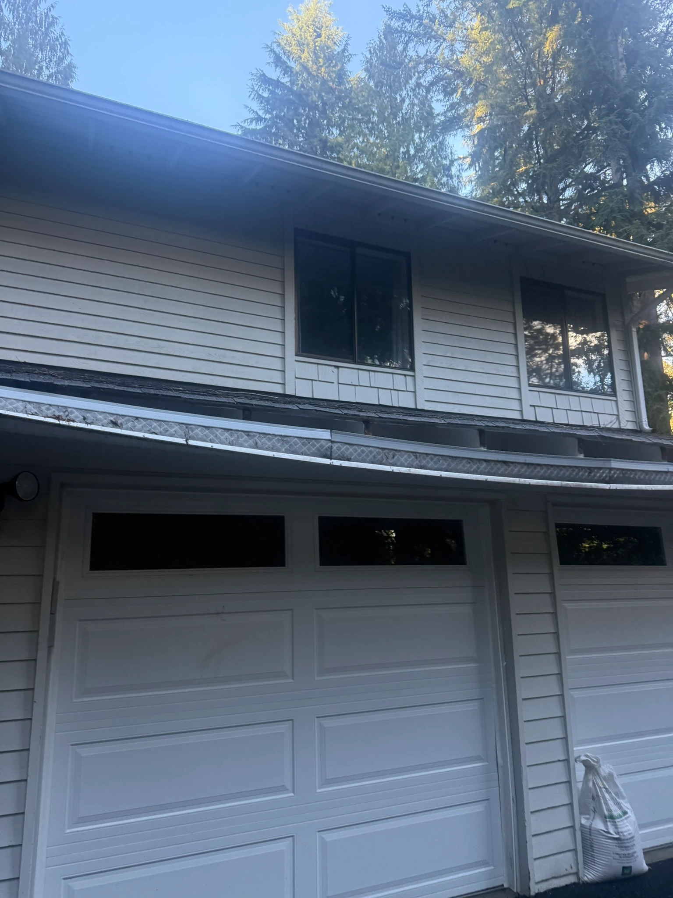
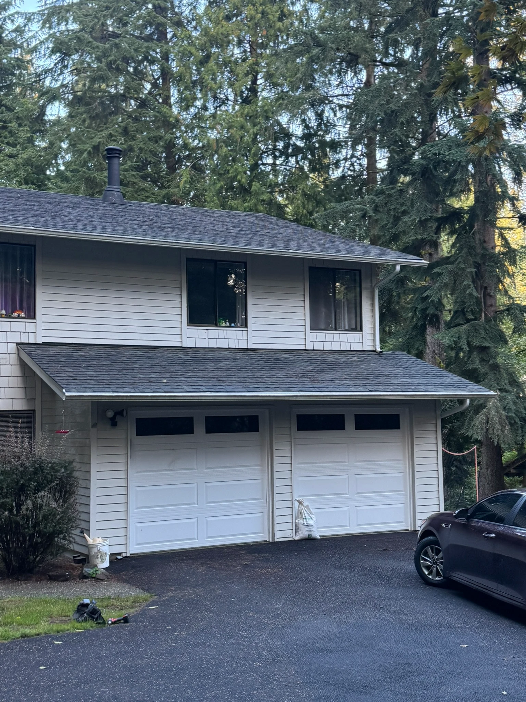
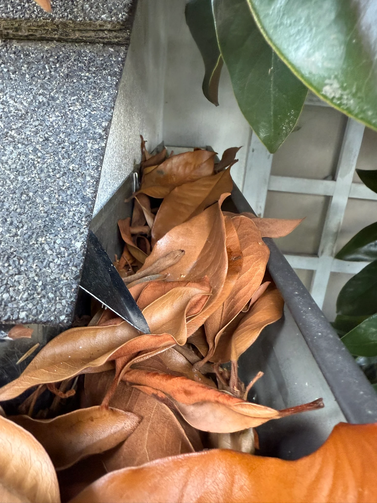
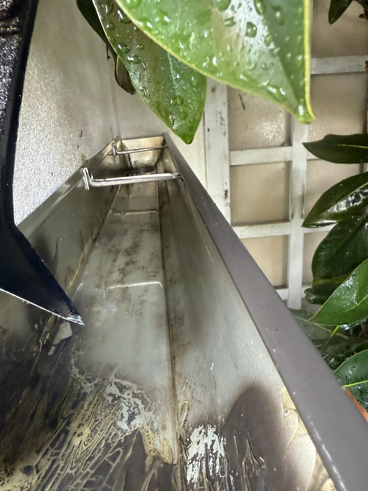
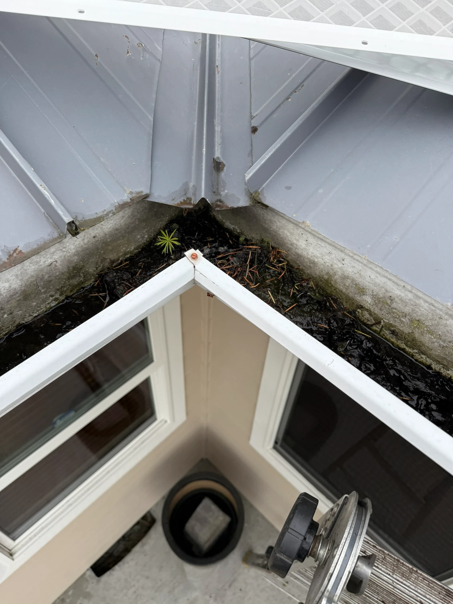
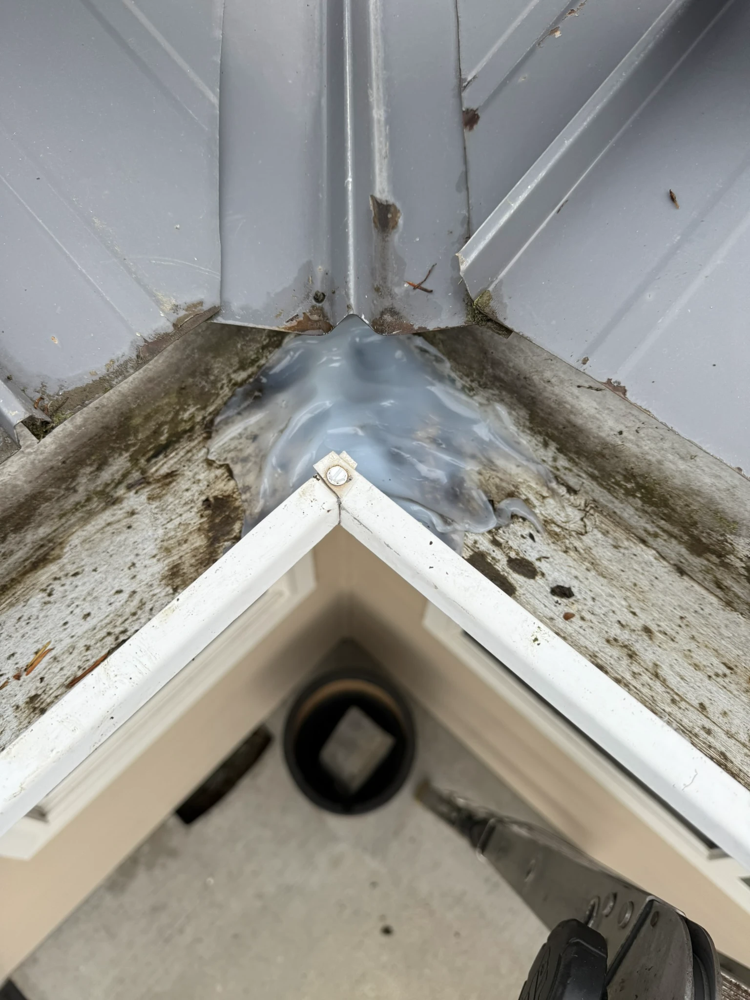
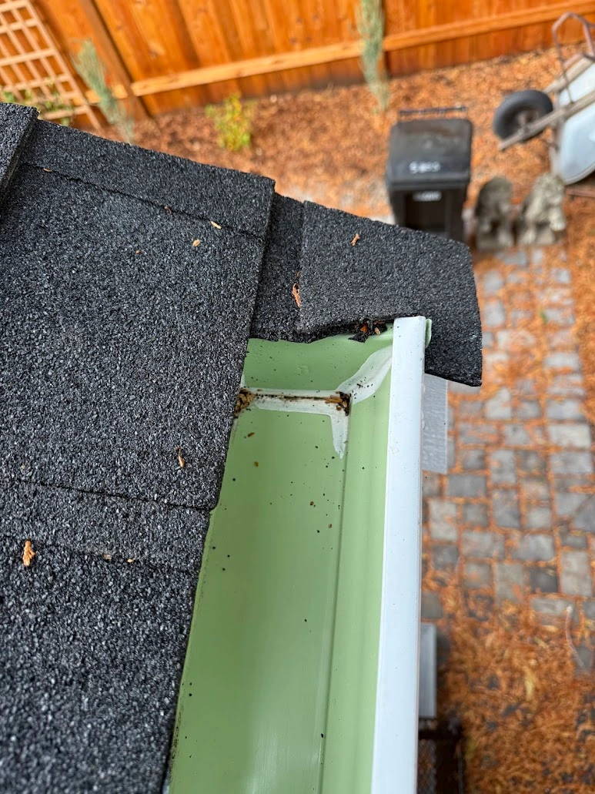
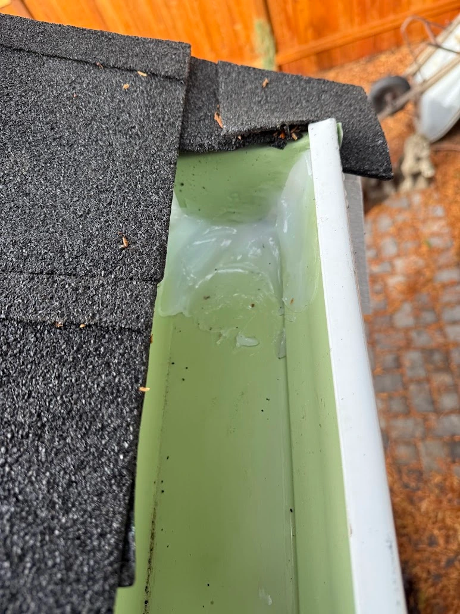

Problem-intent cluster
Gutter problems: diagnose and fix
Overflow, leaking seams, ice dams, clogs, noise—each has causes, diagnosis steps, and professional fixes. Browse 25 intent-driven guides built for Seattle, Bellevue, Redmond, Kirkland, and Issaquah.
Proof strip
Before-and-after curb appeal wins
Documented gutter repairs and cleaning from our field crews across the Eastside.

Before
After
Before
After
Before
After
Before
After
Browse by problem
25 intent-driven guides
Click through to causes, diagnosis, and professional fixes. Each page links to our gutter services and contact.
Leaking & seams
Ice & freeze
Blockage & debris
Noise & water behavior
Next step
Get a professional assessment
Schedule an inspection, seasonal cleaning, or repair estimate. Fast bids and escrow billing available.